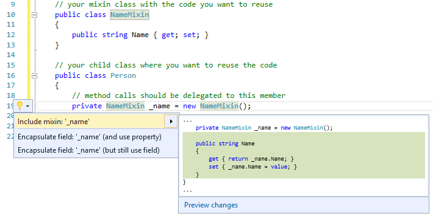

mixinSharp
MixinSharp (or shorter: mixin#) is a code refactoring extension for Visual Studio 2015 that adds mixin support to C# by auto generating the required code.
The VSIX binary installation file can be found in the Visual Studio Gallery, the full source code is available here.
what are mixins?
Mixins are a software concept that provides code reuse by composition instead of inheritance.
The code that should be reused is placed in a separate class (the mixin) and any other class (in this context also called a child class) that wants to use this code simply holds a reference to the mixin and delegates method calls to it.
For the ouside standing caller it looks like that the child instance is handling the request directly.
why are they useful?
Compared to classical inheritance, mixins have some advantages. Please check the wiki for a more detailed comparison between the both approaches.
Unfortunately, C# does not support mixins directly on a language level, that's where mixinSharp comes into play by offering a refactoring step that automatically creates the required mixin code.
a simple example
your mixin class with the code you want to reuse
public class NameMixin
{
public string Name { get; set; }
public override string ToString() => Name;
}the class where you want to include your mixin (your child)
public class Person
{
private NameMixin _name = new NameMixin();
}Open the *Quick Action" context menu while your cursor is on your _name field declaration:

From the context menu that popped up, choose the entry Include mixin: 'name'

After applying the mixin refactoring, your mixin class is included in your child:
public class Person
{
private NameMixin _name = new NameMixin();
public string Name
{
get { return _name.Name; }
set { _name.Name = value; }
}
public override string ToString() => _name.ToString();
}Installation Instruction
mixinSharp is a Visual Studio 2015 Extension (VSIX), as such it can be downloaded from the Visual Studio Gallery.
After downloading the VSIX file, doubleclicking it will start the installation process.
To compile the extension from source, you will have to install the .NET Compiler Platform SDK first (but Visual Studio will automatically ask you to do so during the build).